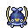

Pokédex / #340

Whiscash #340
WaterGround
It claims a large swamp to itself. If a foe comes near it, it sets off tremors by thrashing around.
Generation 3 · Hoenn

Stats
| Attack | 78 | |
|---|---|---|
| Defense | 73 | |
| Sp. Atk | 76 | |
| Sp. Def | 71 |
In the wild
| Wild level | 40–50 |
|---|---|
| HP | 110 |
| Experience | 10 |
| Egg groups | Water 2 |
Evolution
- Evolves from Barboach at level 30.
Moves
| Level | Move | Type | Category | Power | Energy | Cooldown | Effect | |
|---|---|---|---|---|---|---|---|---|
| 1 | Tackle | Normal | Physical | 15 | 15 | 1s | Tackle is one of the most common and basic moves a Pokemon learns. It deals damage with no additional effects. | |
| 5 | Mud-Slap | Ground | Special | 20 | 30 | 10s | Mud-Slap deals damage and lowers the target's Accuracy by one stage. | |
| 10 | Mud Bomb | Ground | Special | 65 | 80 | 10s | Mud Bomb deals damage and has a 30% chance of lowering the target's Accuracy by one stage. | |
| 15 | Water Gun | Water | Special | 40 | 45 | 9s | Water Gun inflicts damage and has no secondary effect. | |
| 20 | Water Pulse | Water | Special | 60 | 65 | 9s | Water Pulse deals damage and has a 20% chance of confusing the target. | |
| 25 | Aqua Tail | Water | Physical | 90 | 90 | 14s | Aqua Tail deals damage and has no secondary effect. | |
| 35 | Rest | Psychic | Status | – | 100 | 180s | User sleeps for 5 seconds, but user is fully healed. | |
| 40 | Muddy Water | Water | Special | 9 | 100 | 22s | Muddy Water deals damage and has a 30% chance of lowering the target's Accuracy by one stage. | |
| 45 | Thrash | Normal | Physical | 40 | 115 | 12s | The user attacks for 2-3 turns and then becomes confused. | |
| 50 | Future Sight | Psychic | Special | 120 | 120 | 15s | Future Sight deals damage, but does not hit until two turns after the move is selected. | |
| 55 | Magnitude | Ground | Physical | 85 | 95 | 18s | Magnitude does not have a set base power. Instead the base power of this move varies on a magnitude scale between four and ten. | |
| 60 | Fissure | Ground | Physical | 110 | 110 | 17s | Fissure deals damage and has no secondary effect. | |
| 65 | Earthquake | Ground | Physical | 50 | 110 | 23s | Earthquake deals damage. |
Field abilities
SurfDiveWaterfallStrengthRock Smash
Special abilities
ObliviousAnticipation
Egg moves
Dragon DanceEarth PowerFlailHydro PumpMud ShotSparkTake DownWhirlpool
Technical machines
BlizzardDouble TeamEarthquakeHailHyper BeamIce BeamProtectRain DanceRestRock SlideRock TombSandstormShock WaveSubstituteToxic
Drops
| Item | Amount | Chance | |
|---|---|---|---|
| water gem | 1–7 | 100% | |
| razor fang | 1 | 71.4% | |
| pot of water | 1 | 20% | |
| blue sphere | 1 | 16.7% | |
| cutting fang | 1 | 10% | |
| rare sandbag | 1 | 7.14% | |
| clay lump | 1 | 7.14% | |
| onigiri | 1–5 | 5% | |
| whiscash doll | 1 | 0.1% | |
| Splash Plate | 1 | 0.025% | |
| Earth Plate | 1 | 0.025% | |
| held mystic water | 1 | 0.01% | |
| held soft sand | 1 | 0.01% | |
| TM 12 | 1 | 0.005% | |
| TM 26 | 1 | 0.005% | |
| TM 52 | 1 | 0.005% | |
| TM 59 | 1 | 0.005% |